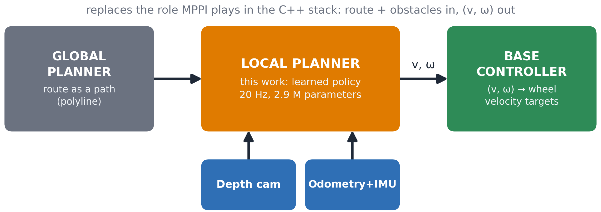
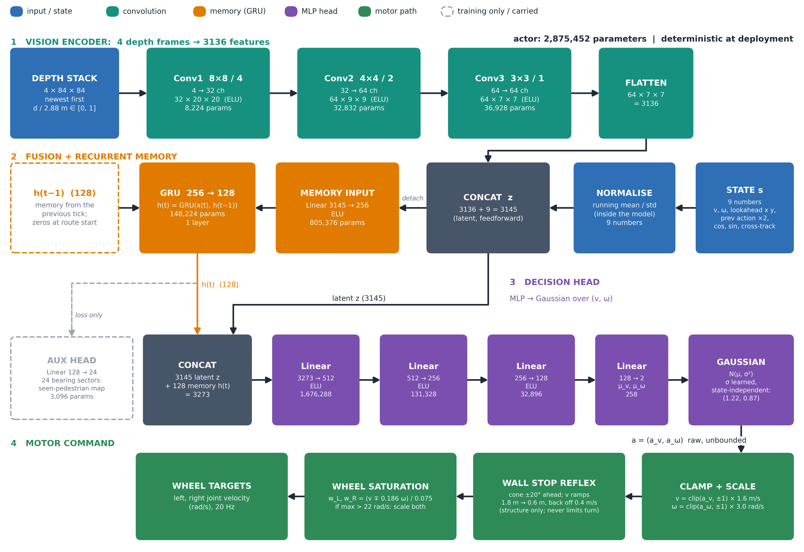
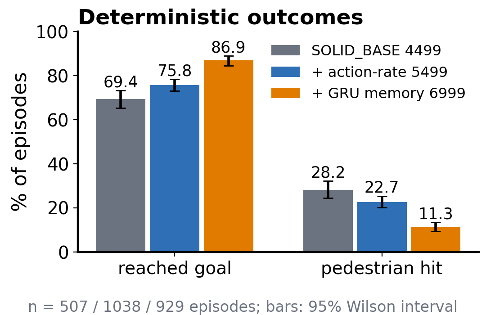
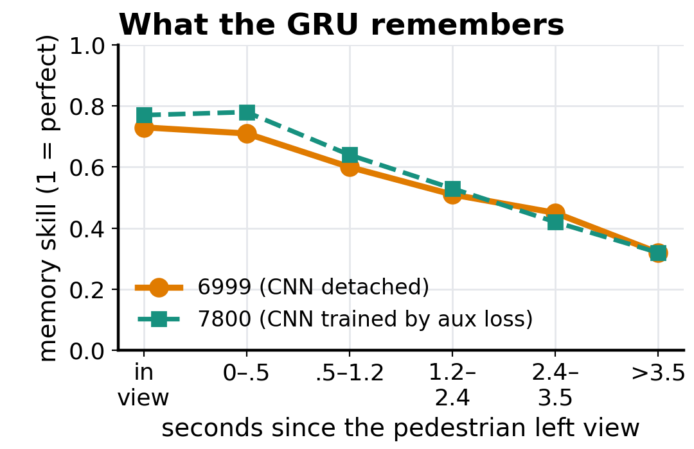

WHEELED HUMANOID // RECURRENT LOCAL PLANNER
A Recurrent Depth-Vision Local Planner
for a Wheeled Humanoid
Every 50 ms, turning four depth frames, nine robot state numbers, and a 128-number GRU memory into continuous forward speed and yaw rates that track global paths around walking pedestrians. Trained in NVIDIA Isaac Lab with asymmetric actor-critic PPO on the Dynamoid v1 humanoid platform.
ABSTRACT
End-to-End Recurrent Local Planning under Severe Camera Blindness
We train one neural network to act as the local planner of a wheeled humanoid. Every 50 ms it turns four depth frames, nine numbers describing the robot and its route, and a 128-number memory into a forward speed and a turn rate that follow a global path around walking pedestrians. The camera sees only a 120° cone out to 2.88 m, so pedestrians routinely drop out of view just before they reach the robot. Adding a GRU memory of those pedestrians, trained with an auxiliary "where were they?" loss, halved pedestrian collisions in simulation (22.7% → 11.3%) and raised goal arrival from 75.8% to 86.9%. The policy steers around people at full speed; it does not choose to slow down or stop.
01 // PROBLEM & SYSTEM SETTING
System Context & Sensor Constraints
Robot & World Specification
The robot is a differential-drive base (wheel radius 0.075 m, wheelbase 0.372 m, body radius 0.607 m) carrying a humanoid upper body. In the C++ stack its local planner has been MPPI; this policy takes over the exact same role: route and obstacles in, (v, ω) out.
The training world is a walled corridor with a 10 m reference path and three pedestrians (radius 0.30 m) walking toward the robot, either straight or with random speed (0–1.2 m/s) and heading (±35°). They do not react to the robot. The policy runs at 20 Hz over 120 Hz physics, 64 robots in parallel, episodes of at most 25 s.

FIG 1: System context — Route & 120° depth camera in, (v, ω) out via wall-safety reflex.02 // ACTOR ARCHITECTURE & METHOD
Observation Contract & Neural Network Structure

FIG 2: Actor Architecture (2,875,452 parameters) — Depth stack → CNN → detached latent → GRU(256→128) → MLP head.03 // EVALUATION OUTCOMES
Benchmarking Across Checkpoint Generations

FIG 3: Episode outcomes across models with 95% Wilson confidence intervals.
FIG 4: Memory skill decay vs time out of view.Explore the Dynamoid Checkpoint & Artifacts
Complete code snapshots, configuration YAMLs, evaluation logs, and model checkpoints.